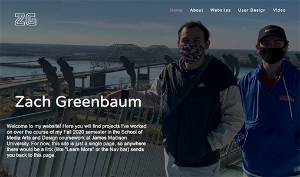
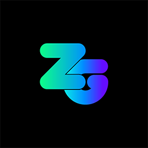

The purpose of this project is to build a personal portfolio website from the ground up in order to showcase work I have completed during my time at JMU and into the future. The website itself should be its own example of what I have learned and show off both design and technical skills. The website should follow the format of what a personal portfolio should look like and the content it should contain, while also being unique and showcasing my skills as a designer. On a resume, you can’t effectively show the work you have completed with full descriptions and photos. Because of this, it is important that this site is developed so that future employers, clients, or anyone interested in my work can view it using a clean website.
At the bare minimum, the project should meet the following goals:
As part of the creation of the portfolio website, I will need to learn some new skills to assist in the site’s creation.
It is important that my portfolio appeals to the primary target audience: employers. The purpose of the website is to showcase my work in order to assist me in getting a job after I graduate JMU. The site should also appeal to other potential audiences, such as clients or anyone else interested in viewing my work, such as professors and peers. The following personas were assembled to create an idea of the audience I will be designing for.
Needs to efficiently hire new employees without it taking up too much time in his busy schedule.
Projects running behind schedule, searching for skilled employees, new problems interrupting his already-busy schedule.
Wants to recruit a designer to provide some design insight on a project. Has a vision!
Worried about outsourcing important projects, needs to stick to a strict timeline, needs accountability from her employees.
| Week 1 (9/12-9/18) |
-Design Sketches, Mood Board -Concept Critiques (in class) -Assemble portfolio content -Begin portfolio research |
| Week 2 (9/19-9/25) |
-Wireframe/Layout for website -Website skeleton/Base code -Prototype design elements |
| Week 3 (9/26-10/2) |
-Begin learning Bootstrap -Learn advanced website elements (html) -Group Working Critiques (in class) -LinkedIn Learning Certificates and Screencast: October 1st @ 11:59 pm |
| Week 4 (10/3-10/9) |
-Complete initial website prototype |
| Week 5 (10/10-10/16) |
-Test website prototype -Make revisions based on testing |
| Week 6 (10/17-10/23) |
-Continue revisions -Learn how to host a website |
| Week 7 (10/24-10/29) |
-Complete final website & host -Final Synopsis/Statement -Final Project Submission: October 29th @ 11:59 pm -SMAD Day: November 5th |
As part of the initial proposal of the site, I have a prototype of a home page I created as part of SMAD 307, along with an early version of a potential logo for the website.
 